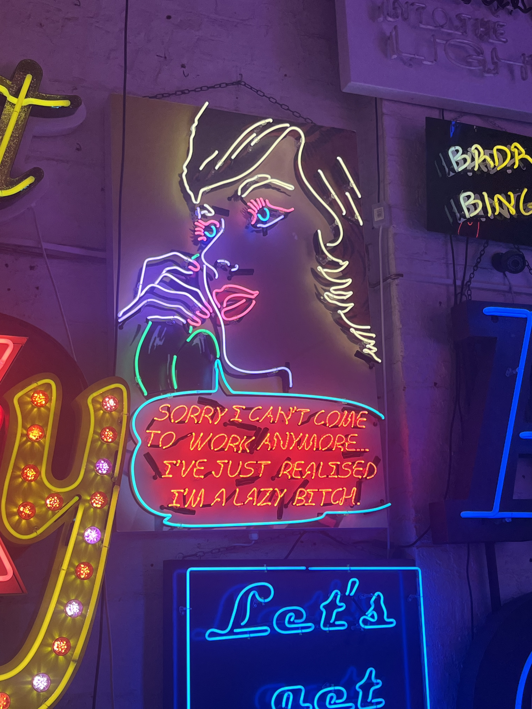
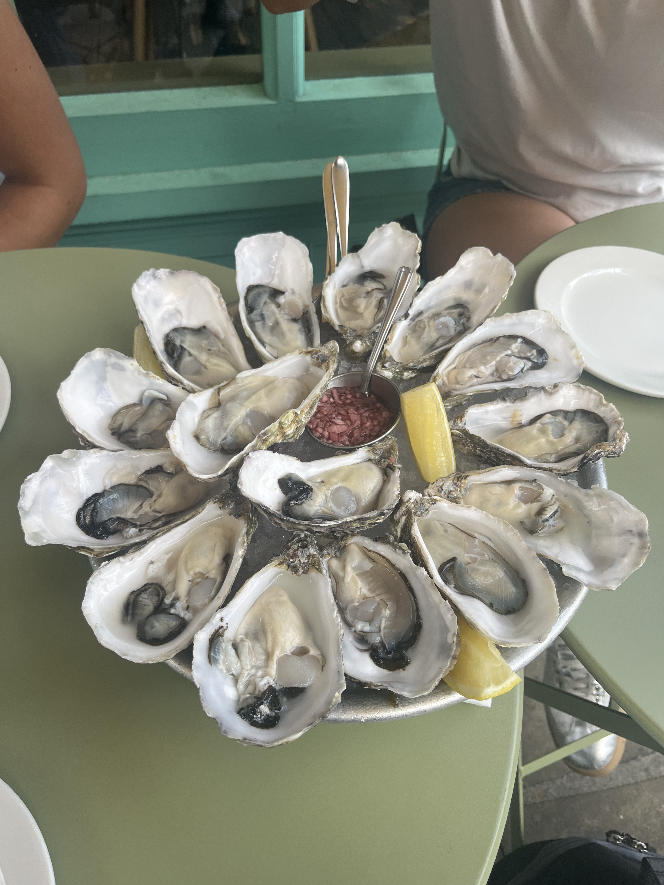
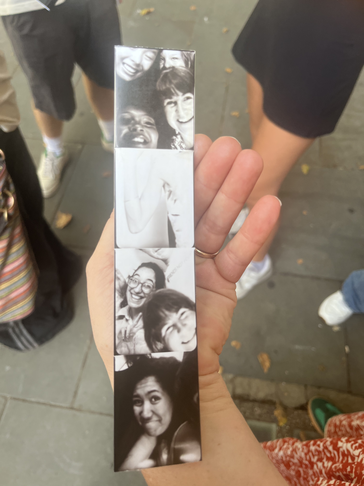
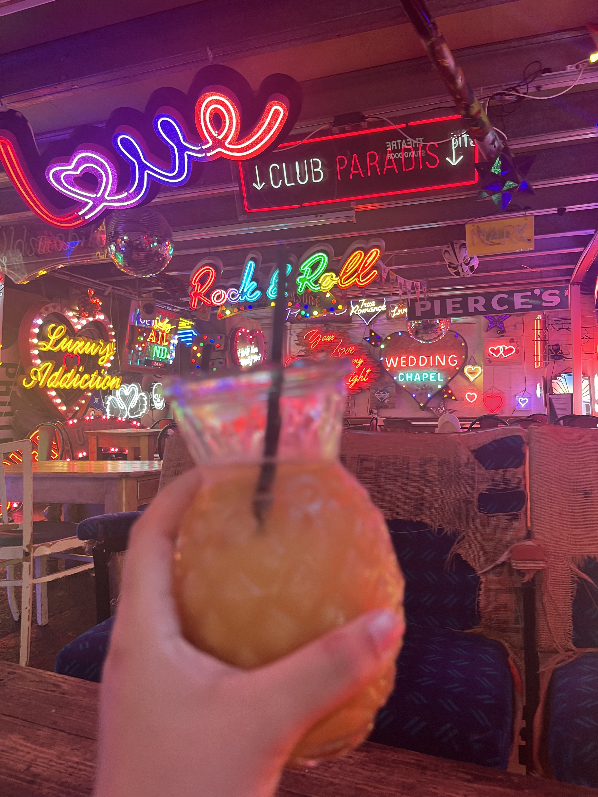
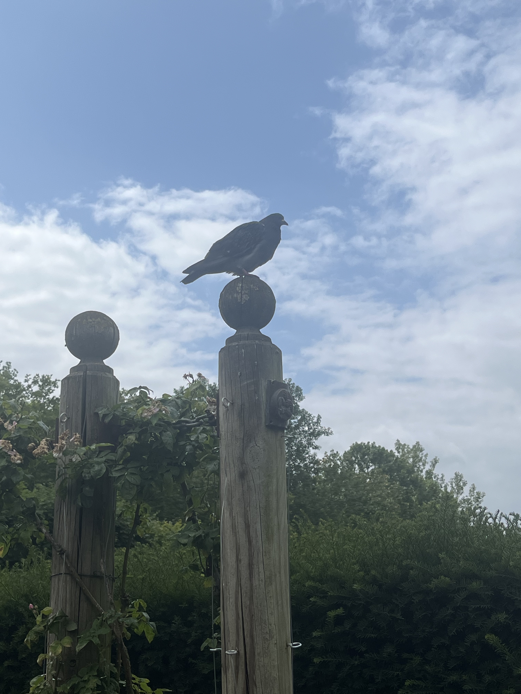
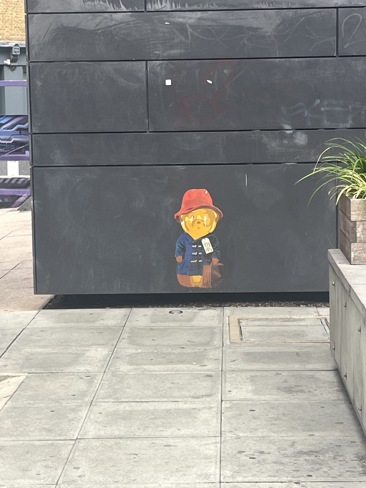
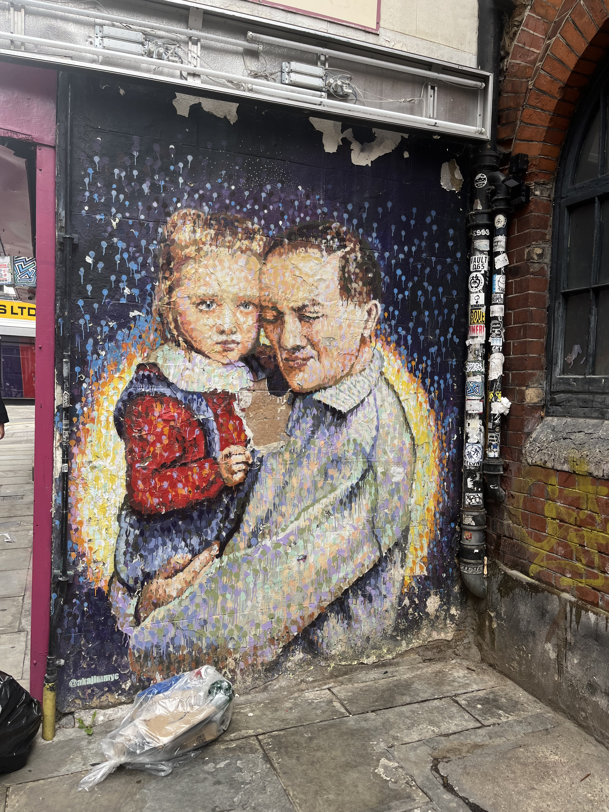
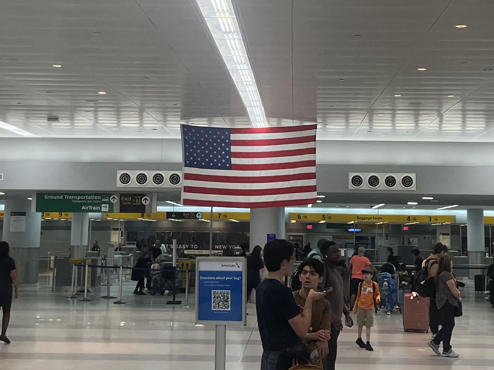

It's 11 O'clock. You've only been awake for 3 hours, but you contemplate if it's too early to take a quick nap. Your body nearly short circuits as it tries to yawn and cough at the same time. At least this time your throat is sore from poorly belting out Whitney Houston last night. You stifle a life as your order of two pound tacos arrives at the table looking much more tragic and much less Mexican than you had anticipated. You walk around basking in the neon lights, sipping on your too sweet mocktail wishing you just ordered a soda. The cool, flowery taste of your first Hugo Spritz makes your taste buds burst as it gives you a warm kiss goodbye on the final sip. The giant tray of oysters descends on the table in front of you, blessing you with its damp, fishy aroma. The pit in your stomach churns and wails, begging you to get out of bed just one more time today. As you put your card down for the round of six pound cocktails, the frugal little voice in the back of your head stays silent. Who knows how many more times you'll be able to take care of your friends like this? Paralyzed between the clutter on your desk and the clutter in your head, you glance at your computer screen flashing with the stark white of an empty Google Doc. You willfully ignore the totally, super prepared tour guide as you quietly celebrate reaching the stage of friendship where just one look makes a whole conversation. You order your second Hugo Spritz... hey, it was really good!! Your head pounds as you try over and over to leave your room before retreating back inside in a bundle of irrational fear about absolutely nothing. You strut across the empty dance floor pointing to your friends, the strobe lights washing up and down your body as you bump and sway to the beat. Nothing can take this moment away from you--until it's 11 O'clock.




You finish shoving the last of your belongings into your shockingly light carry-on bag. You nearly lose your phone in the Uber, but for some reason you don't even care enough to panic. It's 11 O'clock. You eat some overpriced chicken and waffles as your suitcase sits uncomfortably nestled between your aching legs and the bar table. You do some last minute research while you've still got some WiFi. You are relieved to find that the seat next to you is empty. One good thing, you suppose. You watch Knives Out and still somehow don't recognize Michael Shannon. You hear sporadic claps and a meek chorus of groans in response. You stay in your seat amidst the flurry of bags toppling down to the floor. It's not like your in a rush, anyways. You clutch your stuffed dinosaur closer to your stomach. Your mind dissociates as you watch amorphous faces smile to greet you down the walkway; you're just lucid enough to push your luggage in front of you before they try to go in for a hug. You stare out the window as the landscape returns to the all too familiar Long Island Expressway. You linger in the car a second longer as the garage door rumbles closed.



It's 11 O'clock. No, it's 6 O'clock. It's over.
I'm home.
